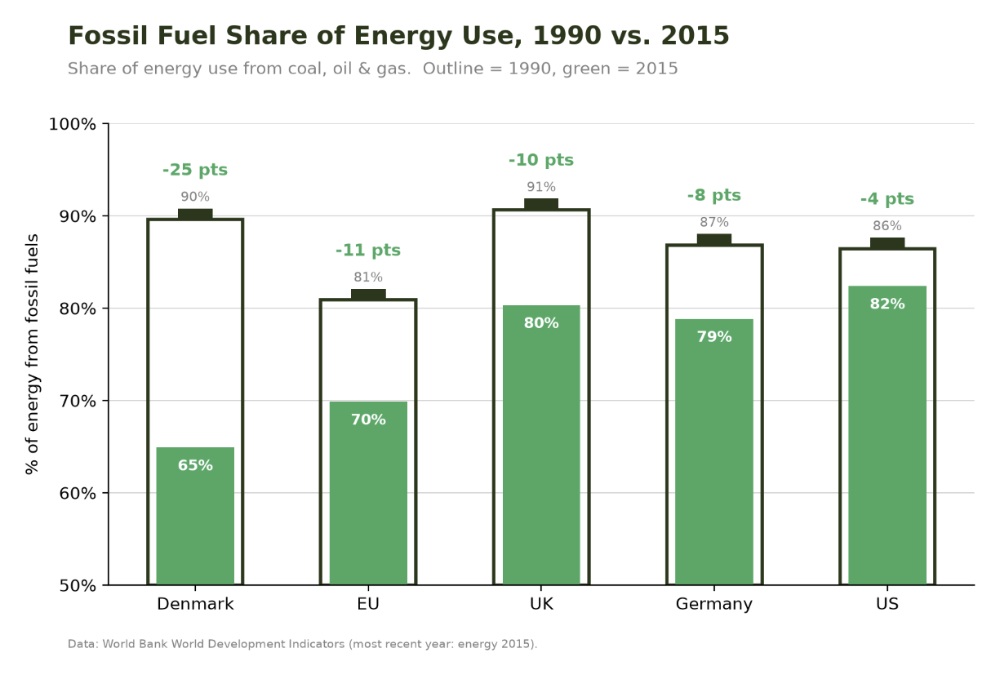
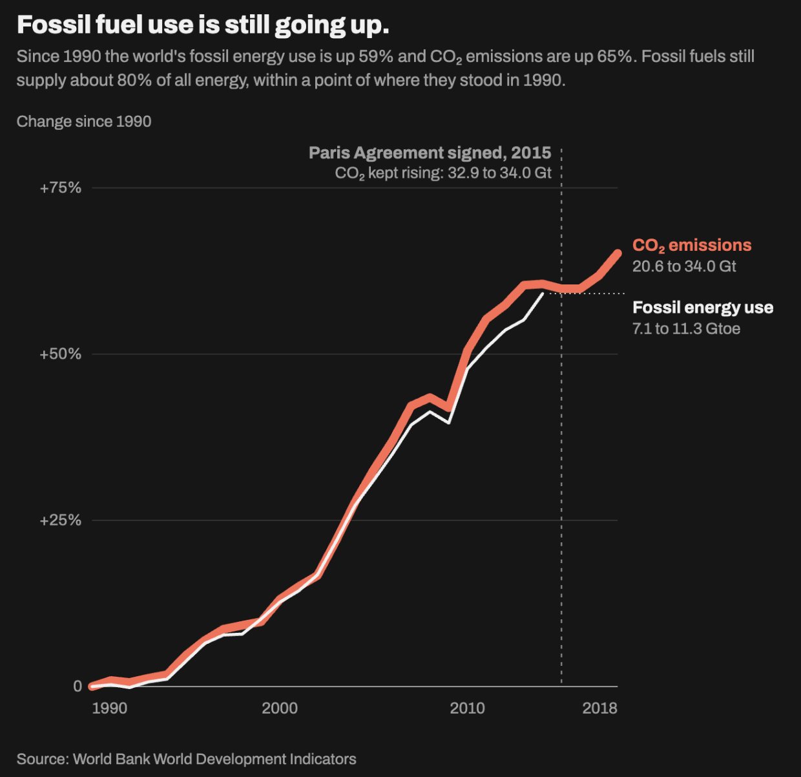

Proposition: “The world is transitioning away from fossil fuels.”
We used the World Bank’s World Development Indicators (energy and climate data, pre-cleaned in the course repo). Design decisions are scored from −2 (fully deceptive) to +2 (fully earnest).
FOR the Proposition

Design Decisions and Rationale:
- (−2) Hand-picked countries. We show Denmark, the EU, the UK, Germany and the US, and every one of them fell. We left out Japan, China and India, where the fossil share rose. After checkpoint feedback we also removed the World bar: the TA pointed out that its drop (81% to 80%) was too small to help the argument, and without it the chart reads more clearly. That fix also made the chart more selective, because the World was the one bar that barely moved. Nothing on the chart tells the reader about these omissions.
- (−1.5) Bar axis starts at 50%. Truncating the bars makes the green fill look like it drained far more than it did. Denmark’s real drop is 25 points, but its bar visually shrinks from about 40 units above the baseline to about 15. The axis is labeled, so a careful reader can catch it. A 0–100% axis would make every drop look much smaller and the battery effect would largely disappear.
- (−1) Battery metaphor. Drawing 1990 as a full outline and 2015 as the fill makes every drop look like a battery running down, which suggests the process is heading toward empty. Even Denmark is still at 65% fossil, and nothing in the metaphor says so. The alternative was a plain 1990-vs-2015 bar chart; the battery makes the “before and after” readable at a glance, and the TA described this version as neat and clear, so we kept it.
- (−1.5) Shares instead of totals. A falling share does not mean falling use, since a share can drop while total consumption grows. The chart shows only the share, and it never shows how much fossil energy these countries or the world use. The 1990 and 2015 endpoints are also a choice, since other years would give different drops.
- (+1.5) Neutral title and honest labeling. The title simply names the metric and years, the subtitle explains what the outline and the fill mean, every value and change is labeled, and the footer cites the World Bank and the data year. The slant comes from selection and framing, so the numbers themselves can be checked.
Data transformations: from the energy file we used the “Fossil fuel energy consumption (% of total)” column and took the 1990 and 2015 values for each country or region. We then calculated the change as 2015 minus 1990, in percentage points (a calculated field). The 1990 value sets the height of each battery outline, the 2015 value sets the fill, and the change is the label above each bar.
AGAINST the Proposition

Design Decisions and Rationale:
- (−1.5) Starting in 1990. The earlier decline in the world’s fossil share, from about 84% in 1971 to about 79% by 1989, is cut off. The chart plots only totals from 1990 on, so the reader never sees that the share had been falling over the longer run, and the climbing lines appear to be the whole story.
- (−1.5) World totals instead of rates. Total CO₂ and fossil energy use are up 65% and 59% since 1990, but CO₂ per person has been roughly flat since 2010 and CO₂ per unit of GDP is down about 25%. Population and economic growth are left out. We also leave out per-country and rich-country data, where emissions fell.
- (−1) Paris Agreement annotation and visual emphasis. The vertical marker and the note “CO₂ kept rising: 32.9 to 34.0 Gt” imply the agreement failed, but only three years of data follow it. A thick, saturated red CO₂ line on a dark background also pulls the eye up the chart, while the thinner white fossil energy line stops in 2015 and CO₂ runs to 2018, so the two totals do not share an end year. Every number shown is accurate.
- (−1) Dropping the fossil share line. Our earlier version also plotted the fossil share of energy (80.8% to 79.7%) as a third line. The TA said that line did not add much to the argument, so we removed it, and the chart now argues only with rising totals. The one measure that stayed flat survives as a sentence in the subtitle, so a careful reader can still find it, but the plot no longer shows it. The TA also suggested plotting countries instead of the world. We kept the world-level view because the proposition is about the world; plotting a few countries would show who is driving the growth, but it would mean more hand-picking.
- (+1) Labeled values and a plain-text disclosure. Start and end values are written next to both lines (20.6 to 34.0 Gt for CO₂, 7.1 to 11.3 Gtoe for fossil energy), the source is cited, and the subtitle says fossil fuels still supply about 80% of energy, “within a point of where they stood in 1990.” That is the strongest counter-evidence to our own claim, and it is stated in plain text, so a careful reader can weigh it.
Data transformations: we converted world CO₂ emissions and fossil energy use into change since 1990 (each year’s value relative to its 1990 value). That puts two series with different units (Gt and Gtoe) on one axis, so the two totals can be compared directly. The raw start and end values are written next to each line. The fossil share of energy, taken from the energy file, appears only in the subtitle.
Final Reflection
The data was the easy part. Both files come from the same World Bank source, are cleanly labeled, and needed only simple transformations: percentage-point changes between two years, change since a baseline year, and a handful of group totals. The hard part was persuasion, because every chart forced us to decide what to leave out. Neither side needed a false number. Denmark’s fossil share fell 25 points while the world’s moved about one point, and world CO₂ rose 65% while the EU’s fell 19%. All of it is accurate, and the story each chart tells came from which countries, metrics and start years we included. The checkpoint feedback showed how far this goes: removing the World bar from the battery chart made the “for” argument cleaner and also made it more selective. The feedback on the line chart pushed us the same way: the TA found it convincing but thought the share line added little, so we removed it. The chart now argues only with rising totals, and the one measure that stayed flat survives as a sentence in the subtitle. What surprised us most was how much the baseline year changes the story. Starting in 1990 hides the fall in the world’s fossil share from about 84% to about 79% between 1971 and 1989, so the share looks flat only because of where we start. We were also surprised by how much design alone adds credibility. The battery makes selective evidence feel intuitive, and a dark, high-contrast line chart makes rising totals feel urgent.
We now define ethical visualization as one that lets the reader reconstruct the fuller picture, even when it leans one way. Persuasion on its own is not unethical. The problem starts when a choice is hidden. Totals versus shares, the start year, the countries shown and the axis range all steer a reader, and they only become misleading when the reader cannot tell they were chosen. Our two sides share many of the same moves: both leave out data that contradicts them, both choose the baseline that suits them, and both pick whichever metric (a share or a total) serves the argument. The stakes matter too. Climate policy is politically charged, and charts like these reach readers who see only the headline and a trusted source like the World Bank. That trust makes selective framing more convincing, which raises our responsibility to make the choices visible.
We would call a persuasive choice acceptable if three things hold: the data is accurate, the choice is visible on the chart, and a careful reader could spot it from the labels alone. It becomes misleading when the reader would need information we deliberately left out. By that test our truncated bar axis is borderline, since it is labeled, but our hand-picked countries on the true side and the pre-1990 decline we cut off on the false side are not flagged on either chart, and that is where we think we cross the line. If we were publishing these, we would keep the framing but add clear notes on the selected years and countries. The gray area is real, because a choice only works if the reader does not notice it, and the same choice can be fine for a reader who is looking for it and misleading for one who is not. The data has limits that neither chart shows, either. The World Bank’s CO₂ series counts emissions where they are produced, so goods that rich countries import do not appear in their numbers, and the energy data ends in 2015 while CO₂ runs to 2018. A reader who treats our charts as the full picture would miss all of that.